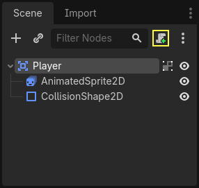
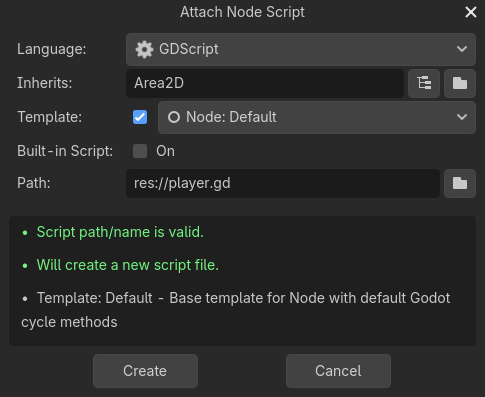
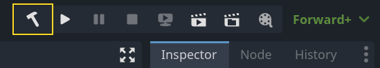
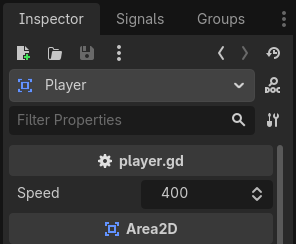
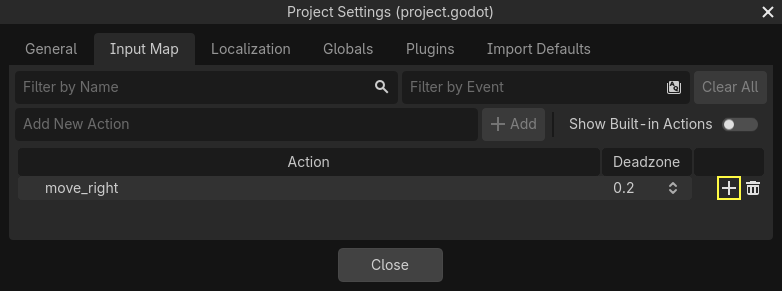
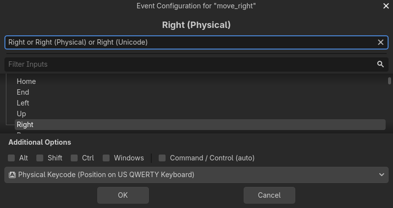
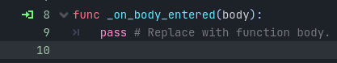

Lập trình người chơi
Trong bài này, chúng ta sẽ thêm chuyển động và hoạt ảnh cho người chơi, đồng thời thiết lập để nó phát hiện va chạm.
Để làm vậy, chúng ta cần thêm một số chức năng mà node có sẵn không cung cấp, nên chúng ta sẽ thêm script. Nhấp vào node Player rồi nhấp nút "Attach Script":

Trong cửa sổ cài đặt script, bạn có thể giữ nguyên các cài đặt mặc định. Chỉ cần nhấn "Create":
Ghi chú
Nếu bạn tạo script C# hoặc ngôn ngữ khác, hãy chọn ngôn ngữ từ menu thả xuống language trước khi nhấn create.

Ghi chú
Nếu đây là lần đầu bạn tiếp xúc với GDScript, hãy đọc Ngôn ngữ script trước khi tiếp tục.
Bắt đầu bằng việc khai báo các biến thành viên mà đối tượng này cần:
extends Area2D
@export var speed = 400 # How fast the player will move (pixels/sec).
var screen_size # Size of the game window.
using Godot;
public partial class Player : Area2D
{
[Export]
public int Speed { get; set; } = 400; // How fast the player will move (pixels/sec).
public Vector2 ScreenSize; // Size of the game window.
}
Dùng từ khóa export cho biến đầu tiên speed cho phép chúng ta đặt giá trị của nó trong Inspector. Điều này tiện lợi cho những giá trị bạn muốn điều chỉnh được giống như các thuộc tính có sẵn của node. Nhấp vào node Player và bạn sẽ thấy thuộc tính giờ đã xuất hiện trong Inspector, ở một mục mới mang tên script. Hãy nhớ rằng, nếu bạn thay đổi giá trị ở đây, nó sẽ ghi đè giá trị mặc định được chỉ định trong script (script sẽ không bị sửa đổi).
Cảnh báo
Nếu bạn dùng C#, bạn cần build (lại) các assembly của dự án mỗi khi muốn thấy biến export hoặc signal mới. Bạn có thể kích hoạt build thủ công bằng cách nhấp nút Build ở góc trên bên phải trình chỉnh sửa.


Script player.gd của bạn hẳn đã có sẵn hàm _ready() và _process(). Nếu bạn không chọn template mặc định như trên, hãy tạo các hàm này trong khi làm theo bài học.
Hàm _ready() được gọi khi một node đi vào scene tree, đây là thời điểm thích hợp để lấy kích thước cửa sổ game:
func _ready():
screen_size = get_viewport_rect().size
public override void _Ready()
{
ScreenSize = GetViewportRect().Size;
}
Giờ chúng ta có thể dùng hàm _process() để định nghĩa những gì người chơi sẽ làm. _process() được gọi mỗi frame, nên chúng ta sẽ dùng nó để cập nhật các thành phần của game mà chúng ta dự đoán sẽ thay đổi thường xuyên. Với người chơi, chúng ta cần làm những việc sau:
Kiểm tra đầu vào.
Di chuyển theo hướng đã cho.
Phát hoạt ảnh phù hợp.
Trước tiên, chúng ta cần kiểm tra đầu vào - người chơi có đang nhấn phím nào không? Trong game này, chúng ta có 4 đầu vào hướng cần kiểm tra. Các input action được định nghĩa trong Project Settings, mục "Input Map". Tại đây, bạn có thể định nghĩa các sự kiện tùy chỉnh và gán cho chúng các phím, sự kiện chuột hoặc các đầu vào khác. Trong game này, chúng ta sẽ gán các phím mũi tên cho bốn hướng.
Nhấn Project -> Project Settings để mở cửa sổ cài đặt dự án và nhấn vào tab Input Map ở phía trên. Gõ "move_right" vào thanh trên cùng và nhấn nút "Add" để thêm action move_right.

Chúng ta cần gán một phím cho action này. Nhấn biểu tượng "+" ở bên phải để mở cửa sổ quản lý sự kiện.

Trường "Listening for Input..." sẽ được chọn tự động. Nhấn phím "phải" trên bàn phím, và menu lúc này sẽ trông như sau.

Chọn nút "ok". Phím "phải" giờ đã được gắn với action move_right.
Lặp lại các bước này để thêm ba ánh xạ nữa:
move_leftgán cho phím mũi tên trái.move_upgán cho phím mũi tên lên.Và
move_downgán cho phím mũi tên xuống.
Tab input map của bạn sẽ trông như sau:

Nhấn nút "Close" để đóng cài đặt dự án.
Ghi chú
Chúng ta chỉ gán một phím cho mỗi input action, nhưng bạn có thể gán nhiều phím, nút joystick hoặc nút chuột cho cùng một input action.
Bạn có thể kiểm tra một phím có đang được nhấn hay không bằng Input.is_action_pressed(), hàm này trả về true nếu phím được nhấn hoặc false nếu không.
func _process(delta):
var velocity = Vector2.ZERO # The player's movement vector.
if Input.is_action_pressed("move_right"):
velocity.x += 1
if Input.is_action_pressed("move_left"):
velocity.x -= 1
if Input.is_action_pressed("move_down"):
velocity.y += 1
if Input.is_action_pressed("move_up"):
velocity.y -= 1
if velocity.length() > 0:
velocity = velocity.normalized() * speed
$AnimatedSprite2D.play()
else:
$AnimatedSprite2D.stop()
public override void _Process(double delta)
{
var velocity = Vector2.Zero; // The player's movement vector.
if (Input.IsActionPressed("move_right"))
{
velocity.X += 1;
}
if (Input.IsActionPressed("move_left"))
{
velocity.X -= 1;
}
if (Input.IsActionPressed("move_down"))
{
velocity.Y += 1;
}
if (Input.IsActionPressed("move_up"))
{
velocity.Y -= 1;
}
var animatedSprite2D = GetNode<AnimatedSprite2D>("AnimatedSprite2D");
if (velocity.Length() > 0)
{
velocity = velocity.Normalized() * Speed;
animatedSprite2D.Play();
}
else
{
animatedSprite2D.Stop();
}
}
Chúng ta bắt đầu bằng cách đặt velocity thành (0, 0) - theo mặc định, người chơi không được di chuyển. Sau đó, chúng ta kiểm tra từng đầu vào và cộng/trừ vào velocity để có được hướng tổng. Ví dụ, nếu bạn giữ right và down cùng lúc, vector velocity thu được sẽ là (1, 1). Trong trường hợp này, vì chúng ta cộng cả chuyển động ngang và dọc, người chơi sẽ di chuyển chéo nhanh hơn so với khi chỉ di chuyển ngang.
Chúng ta có thể ngăn điều đó nếu chuẩn hóa (normalize) vận tốc, nghĩa là đặt độ dài của nó thành 1, rồi nhân với tốc độ mong muốn. Như vậy sẽ không còn di chuyển chéo nhanh hơn nữa.
Mẹo
Nếu bạn chưa từng dùng toán vector, hoặc cần ôn lại, bạn có thể xem giải thích về cách dùng vector trong Godot tại Toán vector. Kiến thức này nên biết nhưng không bắt buộc cho phần còn lại của bài hướng dẫn.
Chúng ta cũng kiểm tra người chơi có đang di chuyển hay không để gọi play() hoặc stop() trên AnimatedSprite2D.
Mẹo
$ là cách viết tắt của get_node(). Vì vậy trong đoạn mã trên, $AnimatedSprite2D.play() tương đương với get_node("AnimatedSprite2D").play().
Trong GDScript, $ trả về node tại đường dẫn tương đối tính từ node hiện tại, hoặc trả về null nếu không tìm thấy node. Vì AnimatedSprite2D là con của node hiện tại, chúng ta có thể dùng $AnimatedSprite2D.
Giờ đã có hướng di chuyển, chúng ta có thể cập nhật vị trí của người chơi. Chúng ta cũng có thể dùng clamp() để ngăn người chơi ra khỏi màn hình. Kẹp (clamp) một giá trị nghĩa là giới hạn nó trong một khoảng nhất định. Thêm đoạn sau vào cuối hàm _process (đảm bảo nó không bị thụt lề bên dưới else):
position += velocity * delta
position = position.clamp(Vector2.ZERO, screen_size)
Position += velocity * (float)delta;
Position = new Vector2(
x: Mathf.Clamp(Position.X, 0, ScreenSize.X),
y: Mathf.Clamp(Position.Y, 0, ScreenSize.Y)
);
Mẹo
Tham số delta trong hàm _process() là độ dài frame - khoảng thời gian mà frame trước đó cần để hoàn thành. Dùng giá trị này giúp chuyển động của bạn luôn nhất quán ngay cả khi tốc độ khung hình thay đổi.
Nhấn "Run Current Scene" (F6, Cmd + R trên macOS) và xác nhận rằng bạn có thể di chuyển người chơi khắp màn hình theo mọi hướng.
Cảnh báo
Nếu bạn gặp lỗi trong bảng "Debugger" với nội dung
Attempt to call function 'play' in base 'null instance' on a null
instance
điều này có thể có nghĩa là bạn đã gõ sai tên node AnimatedSprite2D. Tên node phân biệt chữ hoa chữ thường và $NodeName phải khớp với tên bạn thấy trong cây scene.
Chọn hoạt ảnh
Giờ người chơi đã di chuyển được, chúng ta cần thay đổi hoạt ảnh mà AnimatedSprite2D đang phát dựa trên hướng di chuyển. Chúng ta có hoạt ảnh "walk", thể hiện người chơi đi sang phải. Hoạt ảnh này nên được lật ngang bằng thuộc tính flip_h khi di chuyển sang trái. Chúng ta cũng có hoạt ảnh "up", nên được lật dọc bằng flip_v khi di chuyển xuống. Hãy đặt đoạn mã này ở cuối hàm _process():
if velocity.x != 0:
$AnimatedSprite2D.animation = "walk"
$AnimatedSprite2D.flip_v = false
# See the note below about the following boolean assignment.
$AnimatedSprite2D.flip_h = velocity.x < 0
elif velocity.y != 0:
$AnimatedSprite2D.animation = "up"
$AnimatedSprite2D.flip_v = velocity.y > 0
if (velocity.X != 0)
{
animatedSprite2D.Animation = "walk";
animatedSprite2D.FlipV = false;
// See the note below about the following boolean assignment.
animatedSprite2D.FlipH = velocity.X < 0;
}
else if (velocity.Y != 0)
{
animatedSprite2D.Animation = "up";
animatedSprite2D.FlipV = velocity.Y > 0;
}
Ghi chú
Các phép gán boolean trong đoạn code trên là một cách viết tắt phổ biến của lập trình viên. Vì chúng ta vừa thực hiện phép so sánh (boolean) vừa gán một giá trị boolean, ta có thể làm cả hai cùng lúc. Hãy so sánh đoạn code này với phép gán boolean một dòng ở trên:
if velocity.x < 0:
$AnimatedSprite2D.flip_h = true
else:
$AnimatedSprite2D.flip_h = false
if (velocity.X < 0)
{
animatedSprite2D.FlipH = true;
}
else
{
animatedSprite2D.FlipH = false;
}
Chạy lại scene và kiểm tra rằng hoạt ảnh hiển thị đúng ở mỗi hướng.
Mẹo
Một lỗi thường gặp ở đây là gõ sai tên hoạt ảnh. Tên hoạt ảnh trong bảng SpriteFrames phải khớp với những gì bạn gõ trong code. Nếu bạn đặt tên hoạt ảnh là "Walk", bạn cũng phải dùng chữ "W" viết hoa trong code.
Khi bạn chắc chắn chuyển động đã hoạt động đúng, hãy thêm dòng này vào _ready() để người chơi bị ẩn khi game bắt đầu:
hide()
Hide();
Chuẩn bị cho va chạm
Chúng ta muốn Player phát hiện khi bị kẻ địch đánh trúng, nhưng chúng ta chưa tạo kẻ địch nào cả! Không sao, vì chúng ta sẽ dùng chức năng signal của Godot để làm điều đó.
Thêm đoạn sau vào đầu script. Nếu bạn dùng GDScript, hãy thêm sau extends Area2D. Nếu bạn dùng C#, hãy thêm sau public partial class Player : Area2D:
signal hit
// Don't forget to rebuild the project so the editor knows about the new signal.
[Signal]
public delegate void HitEventHandler();
Đoạn này định nghĩa một signal tùy chỉnh tên "hit" mà người chơi sẽ phát ra (emit) khi va chạm với kẻ địch. Chúng ta sẽ dùng Area2D để phát hiện va chạm. Chọn node Player và nhấp tab Signals bên cạnh tab Inspector để xem danh sách signal mà người chơi có thể phát ra:

Hãy để ý signal tùy chỉnh "hit" của chúng ta cũng có ở đó! Vì kẻ địch sẽ là các node RigidBody2D, chúng ta cần signal body_entered(body: Node2D). Signal này sẽ được phát ra khi một body chạm vào người chơi. Nhấp "Connect.." và cửa sổ "Connect a Signal" sẽ xuất hiện.
Godot sẽ tạo trực tiếp một hàm với đúng tên đó trong script cho bạn. Hiện tại bạn không cần thay đổi cài đặt mặc định.
Cảnh báo
Nếu bạn đang dùng trình soạn thảo văn bản bên ngoài (ví dụ Visual Studio Code), hiện có một lỗi khiến Godot không làm được điều này. Bạn sẽ được chuyển sang trình soạn thảo bên ngoài, nhưng hàm mới sẽ không có ở đó.
Trong trường hợp này, bạn cần tự viết hàm đó vào file script của Player.

Hãy để ý biểu tượng màu xanh lá cho biết một signal đã được kết nối với hàm này; điều đó không có nghĩa là hàm đã tồn tại, mà chỉ là signal sẽ cố kết nối với một hàm có tên đó, vì vậy hãy kiểm tra kỹ rằng tên hàm được viết chính xác!
Tiếp theo, thêm đoạn code này vào hàm:
func _on_body_entered(_body):
hide() # Player disappears after being hit.
hit.emit()
# Must be deferred as we can't change physics properties on a physics callback.
$CollisionShape2D.set_deferred("disabled", true)
// We also specified this function name in PascalCase in the editor's connection window.
private void OnBodyEntered(Node2D body)
{
Hide(); // Player disappears after being hit.
EmitSignal(SignalName.Hit);
// Must be deferred as we can't change physics properties on a physics callback.
GetNode<CollisionShape2D>("CollisionShape2D").SetDeferred(CollisionShape2D.PropertyName.Disabled, true);
}
Mỗi lần kẻ địch đánh trúng người chơi, signal sẽ được phát ra. Chúng ta cần tắt va chạm của người chơi để không kích hoạt signal hit nhiều hơn một lần.
Ghi chú
Việc tắt collision shape của area có thể gây lỗi nếu nó xảy ra giữa lúc engine đang xử lý va chạm. Dùng set_deferred() sẽ yêu cầu Godot chờ đến khi an toàn mới tắt shape.
Phần cuối cùng là thêm một hàm mà ta có thể gọi để đặt lại người chơi khi bắt đầu game mới.
func start(pos):
position = pos
show()
$CollisionShape2D.disabled = false
public void Start(Vector2 position)
{
Position = position;
Show();
GetNode<CollisionShape2D>("CollisionShape2D").Disabled = false;
}
Khi người chơi đã hoạt động, chúng ta sẽ làm kẻ địch trong bài tiếp theo.